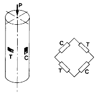
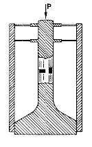
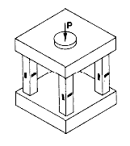
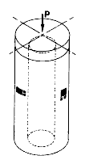
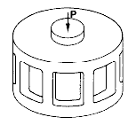
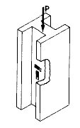

Strain Gage Based Transducers reference
The column load cell has a history which dates back to the earliest strain gage transducers. As referred to here, the column spring element consists of one or more cylindrical members of the general form shown in Fig. A (but not necessarily circular in cross section). The spring element is intended for axial loading; and typically has a minimum of four strain gages, two in the longitudinal direction, and two oriented transversely to sense the Poisson strain. The gages are connected as indicated to form a full-bridge circuit - but not a fully active bridge circuit because the transverse Poisson strain is much smaller than the axial strain. When designed with the appropriate supporting structure and means for introducing the load into the column, this type of load cell can be made either for compression or for tension service, or for both.

Fig. A
Although conceptually simple, the column spring element embodies a number of special characteristics which require consideration when attempting to achieve a high-accuracy load cell. For example, the column is preferably made long enough with respect to its cross section so that a uniform strain field, unaffected by end conditions, is established at the strain gage locations. This normally requires that the cylindrical portion of the column be, say, five times as long as the largest cross-sectional dimension. Since the column configuration is subject to second-order effects from off-axis load components, provision must be made for isolating the axial load output from these. A representative design for a practical column load cell is shown in the simplified cutaway sketch of Fig. B. The two diaphragms at the upper end of the column serve to minimize transmission of extraneous vectors and couples to the column.

Fig. B
Deservedly or otherwise, column load cells have a reputation for inherent nonlinearity. The deviation from linear behavior is commonly ascribed to the change in cross-sectional area of the column (due to Poisson's ratio) which occurs with deformation under load. Because of this effect, the stiffness of the spring element continually increases as it is loaded in compression, and decreases with tension loading. Implicit in the latter statement is the assumption that the elastic modulus remains constant and independent of the accompanying density changes. More likely, the modulus tends to increase slightly in compression and decrease in tension, aggravating the area effect. Even though these modulus variations are too small for detection in ordinary materials properties tests, they can still be significant at the levels of precision involved in modern strain gage transducers. Pending the availability of more accurate data on elastic modulus variation with stress, we can at least estimate the nonlinearity due to the area change. Assuming a circular cross-section column, it can be calculated that the nonlinearity caused by the area change is approximately 0.003% per 100 microstrain of longitudinal strain in the column.
Actually, the area and modulus effects described above are only two of several which seem to arise, directly and indirectly, from the nonsymmetric stress distribution in a column. With both bending and shear-web spring elements, in contrast, there are usually equal volumes of metal subjected to numerically equal tensile and compressive stresses, thus providing numerous mechanisms for internal self-compensation of nonlinearities - but the same is not true for column spring elements.
Consider, for example, the column load cell nonlinearity arising from the fact that all four arms of the bridge circuit are not equally active. As shown in Measurements Group Tech Note TN-507, Errors Due to Wheatstone Bridge Nonlinearity, this error occurs whenever the resistance change in one arm of the bridge circuit is not matched by an equal and opposite change in the adjacent arm. Because the resistance changes in the transverse strain gages on a column are only a third or less of those in the longitudinal gages, the bridge output is always nonlinear. In magnitude, the error is about 0.007% per 100 microstrain of column axial strain. The sign of the error is such that it is always opposite to the area change nonlinearity evaluated previously. Thus, the Wheatstone bridge nonlinearity not only cancels, but overcompensates for the geometric nonlinearity.
Described in U.S. Patent No. 3,034,346 is a very interesting technique for incorporating nonlinearity compensation in virtually any type of load cell. The method involves installing an additional strain sensor on the spring element, and connecting it in series with the bridge power supply rather than in the bridge itself. The output of the gage thus serves as a feedback for adjusting the bridge voltage in the opposite direction to that of the nonlinearity error. Depending on the material of the gage grid, and on the position and orientation of the gage on the spring element, approximate compensation can be achieved for almost any monotonically varying nonlinearity error.
Column spring elements take on a wide variety of forms in designers' attempts to optimize the load cell in terms of both production and performance considerations. The column cross section may be square, for example, instead of circular; or it may be circular with flats machined on four sides to facilitate strain gage installation.
Although column load cells are usually quite compact in transverse directions, they can become inconveniently tall and bulky when designed for very high loads. One means of obtaining a high-capacity, low-profile column load cell is shown in Fig. C. In this type of design, the load is carried by four or more small columns, each with its own complement of strain gages. The corresponding gages from all of the columns are connected in series in the appropriate bridge arms. The result is not only a very compact configuration, but one which provides improved discrimination against the effects of off-axis load components.

Fig. C
The column spring element can also be made hollow as in Fig. D. For the same net cross-sectional area (and therefore the same compliance with respect to purely axial loads), the hollow cylinder is more resistant to bending because of its greater area moment of inertia. This concept can also be implemented in a low profile, multiple-column configuration such as that shown in Fig. E. Still another method of increasing the area moment of inertia for a given cross-sectional area is illustrated in Fig. F. The H-section column has the important advantage of allowing the strain gages to be positioned much closer to the neutral axis of the column. In this location they are correspondingly less sensitive to any bending strains which may occur in the spring element.


Figs. D (left) and E

Fig. F
Although column spring elements have been, and continue to be, widely applied in high-capacity load cells, their popularity is evidently on the wane. In many cases, a properly designed shear-web spring element can offer greater output, better linearity, lower hysteresis, and faster response.
Note: Keep in mind that that many of the load cell configurations illustrated here (and countless others) have been the subject of one or more patents, some of which may currently be in force. It is therefore recommended that the patent literature be consulted prior to undertaking the design or manufacture of a load cell.